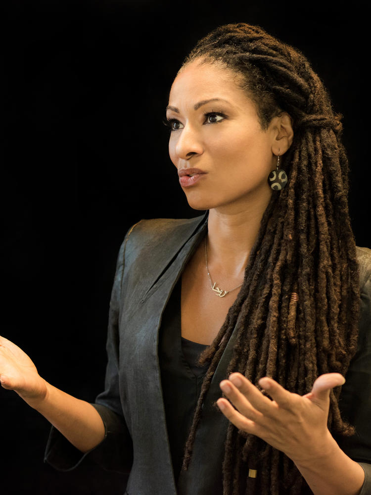

Ruha Benjamin

Dr. Ruha Benjamin is a sociologist, author, and public intellectual whose research refutes the notion of technology as a neutral entity. Currently a professor of African American Studies at Princeton University, Benjamin investigates the ways in which race, inequality, and power are encoded in new technologies such as artificial intelligence and facial recognition software. Instead of accepting innovation on its own terms, Benjamin asks a critical question: Who benefits, and who gets harmed in the process?
Benjamin is the author of Race After Technology, in which she coins the term “New Jim Code” to refer to the ways in which automated technologies can perpetuate racial inequalities in the name of objectivity. She shows how algorithms in healthcare, law enforcement, and employment often perpetuate historical injustices of discrimination when designed without attention to diversity and accountability.
“Better never means better for everyone … It always means worse, for some.”
In contrast to the high-profile tech CEOs, Benjamin operates at the cultural and structural level of innovation. She seeks to upend the Silicon Valley approach to innovation, which is characterized by the slogan “move fast and break things,” in favor of what she terms “abolitionist tools", tools that are designed to dismantle oppression rather than optimize it.
Ruha Benjamin’s work is very intersectional. As a black female scholar in a white-dominated academic and tech environment, she writes about her own experiences with the intersections of race, gender, and class in systems of power. She examines how automated systems impact those at multiple margins of society, such as black women interacting with healthcare algorithms, poor communities impacted by predictive policing software, or immigrants monitored by biometric technologies. She thinks of technology as a social system, not just a technical one. In this way, she points out that bias is not just a “data problem” but a problem of history and structure. By bringing artists, engineers, and activists together, she shows what collaborative leadership looks like, leadership that is not hierarchical but communal.
Ruha Benjamin on AI and the Freedom Struggle
Learn More
Brian Nord

Dr. Brian Nord is an astrophysicist and machine learning researcher whose work pushes the tech world to confront the racial and structural inequities embedded in artificial intelligence. At Fermilab and the University of Chicago, he uses AI to study the universe while also challenging the culture of science and technology from within. His work blends technical innovation with a commitment to justice, showing that scientific progress must include the people most often excluded from it.
Nord is a co‑founder of the Deep Skies Lab, a research collective that brings together scientists, engineers, and artists to rethink how AI is developed and who it serves. The lab intentionally rejects traditional hierarchies, instead creating a collaborative environment where early‑career researchers and people of color have space to lead. This model challenges the “lone genius” myth that dominates tech and highlights the importance of community‑centered innovation.
Beyond his scientific work, Nord is a national voice on the social impacts of AI. He writes and speaks about how algorithmic systems can reinforce racial bias, especially when they are built without transparency or diverse perspectives. His advocacy focuses on the emotional and structural barriers faced by Black scientists in predominantly white institutions, pushing universities and tech organizations to rethink their hiring practices, mentorship structures, and research priorities.
Nord’s leadership shows that equity is not separate from technology—it is a core part of building systems that are safe, fair, and accountable. His work continues to influence researchers, policymakers, and students who are shaping the future of AI. By combining scientific expertise with a deep commitment to justice, he offers a model for what responsible tech leadership can look like today.
Learn More
Ada Nduka Oyom

Ada Nduka Oyom is a self taught developer who originally studied microbiology at the University of Nigeria. Stumbling into the tech world on her own, she realized many women hesitate to persue careers in technology. She went on to become lead for the Google developer group chapter in school, which allowed her to network with some of the brightest Nigerian tech Gurus, and this exposed her to unique technical concepts and technologies.
In 2016, Ada Nduka Oyom founded She Code Africa, an organizaton that is paving the way for women in technology and redefining what the tech industry looks like in Africa. She Code Africa focuses on educating young women with the tools and knowlegde to pursue careers in tech, establishing mentorship opportunities, and providing networking events.
Ada Nduka Oyom exemplifies ambition in the tech field as both a woman and a person of color. This instance of intersectionality has informed her choices as a leader in the field, especially through her work in She Code Africa. Ada Nduka Oyom's mission to encourage and inspire African women to pursue careers and skills in technology is truly inspirational, making her an incredible role model in the field.